Контекст
Калининградская область компактна, поэтому поездки между городом и областью — часть повседневной жизни. Жители ездят в Калининград на работу, а из города — к морю и в соседние города.
Как объединить городские поездки и межгород в одном сервисе
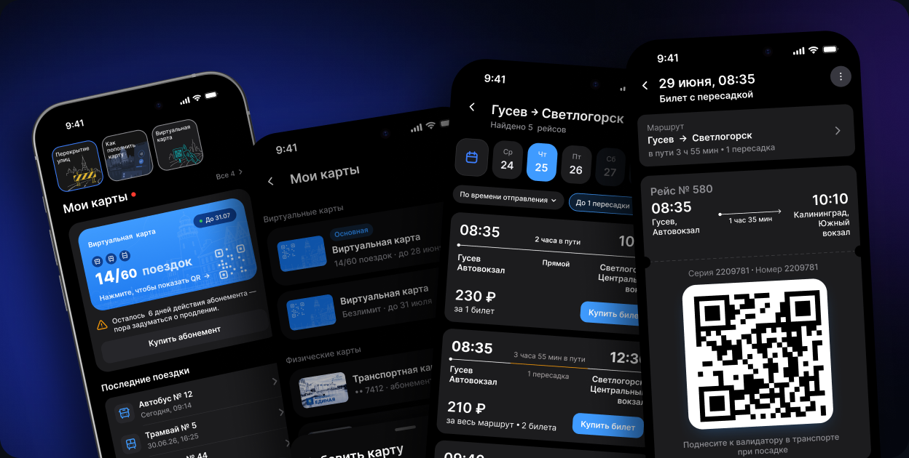
01 · Контекст и проблема
Калининградская область компактна, поэтому поездки между городом и областью — часть повседневной жизни. Жители ездят в Калининград на работу, а из города — к морю и в соседние города.
Для городских и междугородних поездок нужны разные действия, а их цифровые сценарии разорваны. Я решила объединить их в одном приложении, сохранив различия в правилах поездки и оплаты.
Решение 01 · Транспортная карта
Тарифы и способы пополнения доступны сразу — оформить и пополнить карту можно без поездки в офис.
Поездка в офис → Получение карты → Тариф и пополнение
Выпуск карты → Тарифы доступны сразу → Пополнение онлайн
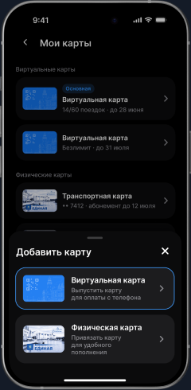

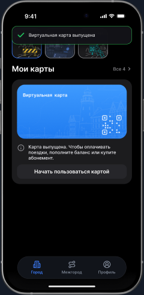
Решение 02 · Баланс и абонемент
Статус и оставшиеся поездки видны на карте. Приложение заранее предупреждает, когда абонемент скоро закончится.
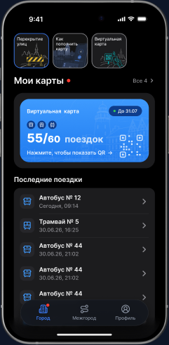
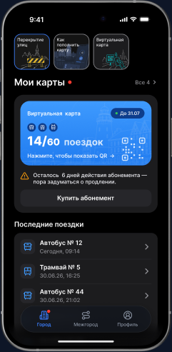
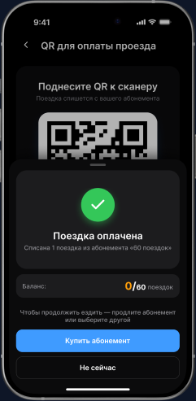
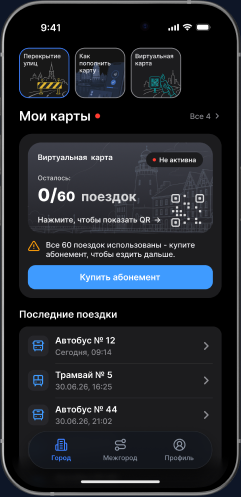
Статус меняется автоматически и всегда виден на карте. Предупреждение появляется заранее и не мешает поездке.
Решение 03 · Междугородние поездки
При выборе междугороднего рейса пассажиру важны время отправления и прибытия, стоимость, место посадки, пересадка и общая длительность. Поэтому ключевые параметры показаны уже в результатах поиска.

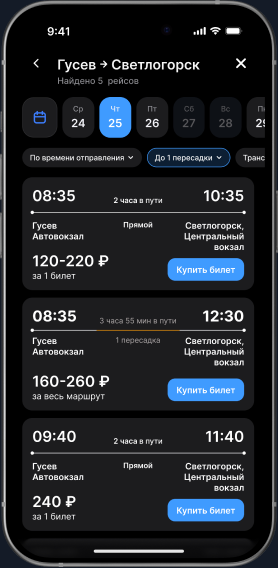
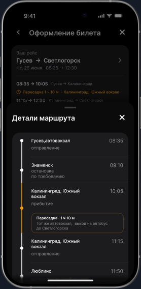
Решение 04 · Пересадка
Технически это несколько рейсов и сегментов. Для пассажира — одна задача: попасть из точки A в точку B.
Поэтому сегменты объединены общей логикой.
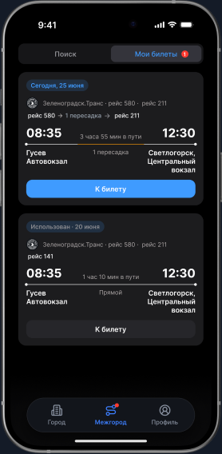
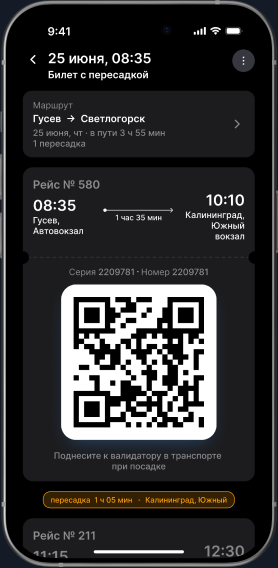
Легче сравнивать варианты, понятнее общая длительность, меньше риска купить несовместимые рейсы.
Покупка остаётся единым сценарием, заказ проще сопровождать при изменении одного из сегментов.
Решение 05 · Быстрый доступ
Продумала сценарии, к которым пассажир возвращается каждый день, и состояния, в которых основной путь нельзя продолжить.
Повторить поиск без повторного ввода направления.
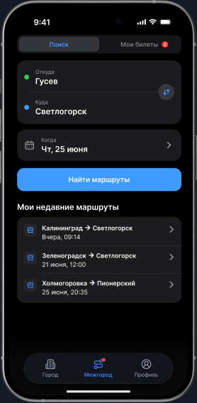
Предупреждение появляется заранее и не блокирует поездку.
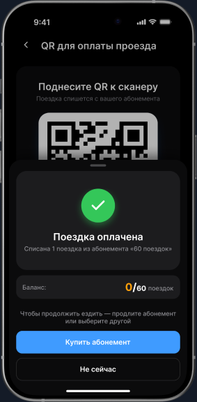
Направление сохраняется, сервис предлагает ближайшие даты.
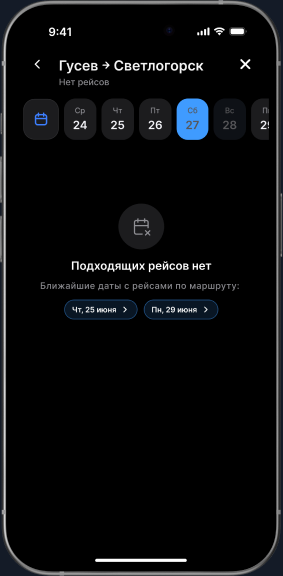
Формат проекта
Кейс основан на опыте работы с реальным транспортным продуктом. Из-за NDA оригинальные интерфейсы, структура и материалы компании не используются.
Понимание предметной области, типовые ограничения и пользовательские сценарии.
Структуру продукта, информационную архитектуру и взаимодействие функций.
UI, визуальную систему, тексты, данные и все показанные экраны.